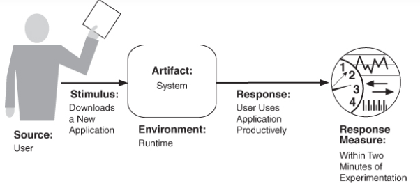
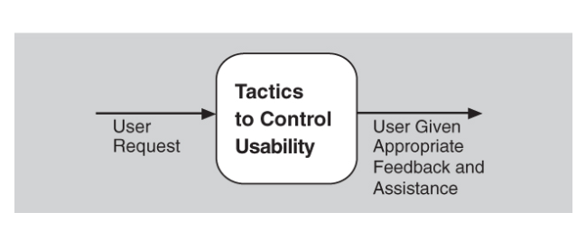

USABILIDAD
Es la facilidad con la cual las personas pueden utilizar un sistema con el fin de alcanzar un objetivo concreto
Cuando el usuario emite una orden de cancelación, el sistema debe estar “escuchando” (por lo tanto, existe la responsabilidad de tener un oyente constante que no está bloqueado por las acciones de lo que se está cancelando).

Cuando un usuario ha iniciado una operación de larga duración -por ejemplo, descargando un archivo grande o un conjunto de archivos de un servidor- a menudo es útil proporcionar la capacidad de pausar y reanudar la operación..


OBJETIVO
generar una respuesta a un evento que llega al sistema dentro de alguna restricción basada en el tiempo.Las tácticas de rendimiento controlan el tiempo dentro del cual se genera una respuesta.

TACTICAS
Aumente la coherencia semántica
Restrinja las dependencias
Aplazar el enlace

MANTENER EL MODELO DEL USUARIO
Este modelo representa explícitamente el conocimiento del usuario del sistema, el comportamiento del usuario en términos de tiempo de respuesta esperado y otros aspectos específicos de un usuario o una clase de usuarios. Un modelo también puede controlar la cantidad de asistencia y sugerencias proporcionadas automáticamente a un usuario.